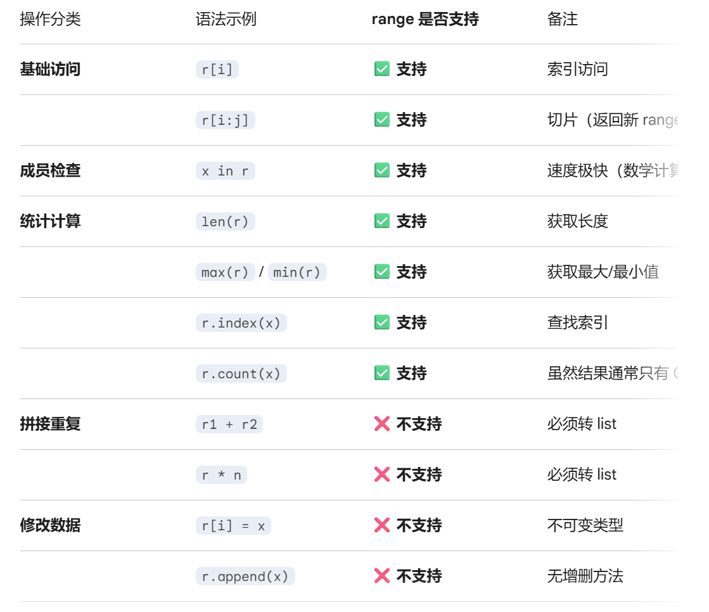
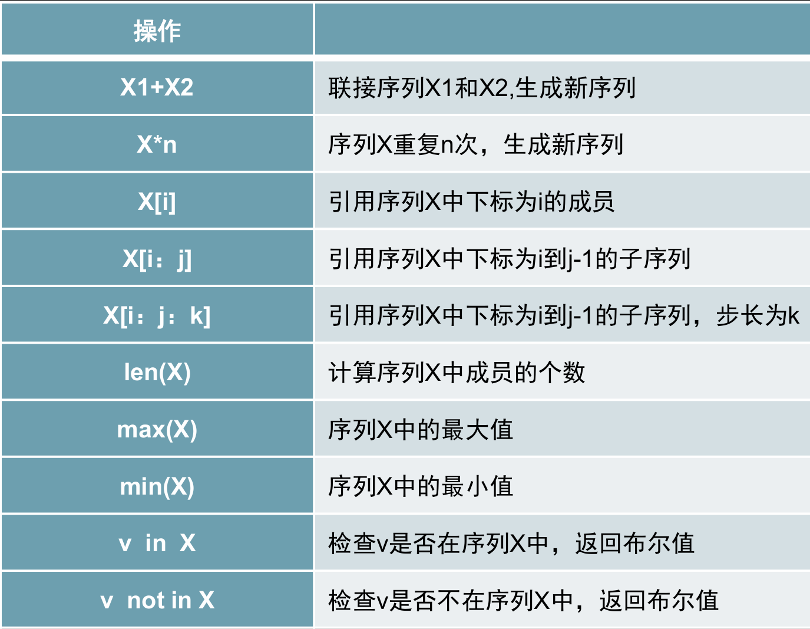

range 类型¶
称为"整数序列生成器"或 简称为"范围"
1 range 的定义¶
range 是 Python 的内置类型，用于表示一个不可变的整数序列。
Info
在 Python 3 中，range 是一个专门的类型（for 循环中指定循环次数。
1.1 核心特性¶
- 惰性求值（Lazy Evaluation）：它不会在内存中预先创建整个数字列表，而是只存储起始、终止和步长。只有在迭代时才会实时计算下一个数值。
- 内存效率高：无论
range表示的范围是 10 还是 100 万，它占用的内存空间都是固定且极小的。 - 不可变性：一旦创建，不能修改其内部参数，也不能像列表那样对某个索引进行赋值。
2 语法与参数¶
range 接受 1 到 3 个参数，语法如下：
2.1 语法格式¶
range(stop)range(start, stop[, step])
2.2 参数详解¶
Warning
参数必须是整数int类型，错误时返回空的range，仍然保留有range的特征
| 参数 | 含义 | 默认值 | 说明 |
|---|---|---|---|
start |
序列开始的值 | 0 |
包含该值（左闭） |
stop |
序列结束的值 | 必填 | 不包含该值（右开） |
step |
步长 / 间隔 | 1 |
每次递增的数值；可以为负数 |
示例
# 1. 只有一个参数：从 0 开始，到 5 结束（不含 5）
print(list(range(5))) # [0, 1, 2, 3, 4]
# 2. 两个参数：从 2 开始，到 6 结束（不含 6）
print(list(range(2, 6))) # [2, 3, 4, 5]
# 3. 三个参数：从 1 开始，到 10 结束，步长为 2
print(list(range(1, 10, 2))) # [1, 3, 5, 7, 9]
# 4. 负数步长：递减序列
print(list(range(10, 0, -2))) # [10, 8, 6, 4, 2]
# 生成 -1, -3, -5
print(list(range(-1, -6, -2)))
3 range 的高级操作¶
虽然 range 不是列表，但它是一个序列，因此支持许多类似列表的只读操作。
Warning
range是不可变序列类型，不支持修改数据和拼接重复
具体内容可以参考下表：

附表： 序列常用操作

4 常见应用场景¶
4.1 for 循环控制¶
这是 range 最主要的使用方式。
# 循环执行 3 次
for i in range(3):
print("第", i+1, "次执行")
4.2 配合索引遍历列表¶
当既需要元素又需要索引时使用。
fruits = ["apple", "banana", "cherry"]
for i in range(len(fruits)):
print(f"索引 {i} 对应的是 {fruits[i]}")
4.3 快速生成数字列表¶
利用 list() 函数将 range 对象转换为实体列表。
nums = list(range(1, 101)) # 快速生成 1 到 100 的列表
5 range vs list对比¶
| 特性 | range 对象 |
list 列表 |
|---|---|---|
| 存储内容 | 仅存储 start, stop, step | 存储每一个具体的元素 |
| 内存占用 | 极小且恒定 (O(1)) | 随元素数量增加而增大 (O(n)) |
| 可变性 | 不可变 (Immutable) | 可变 (Mutable) |
| 性能 | 迭代速度快，初始化极快 | 频繁增删元素效率低 |
| 数据类型 | 只能包含整数 | 可以包含任何类型 |
注意事项¶
- 右开区间：
range(0, 10)永远不会包含10。 - 空序列：如果
start大于stop且step为正数，或者start小于stop且step为负数，range会产生一个空序列，且不会报错。range(5, 2)-> 空range(2, 5, -1)-> 空
- 类型限制：
range的参数必须是整数。传递浮点数（如range(0, 0.5)）会抛出TypeError。 - 直接打印：直接
print(range(10))会输出range(0, 10)而不是数字列表。若要查看内容，需使用list(range(10))。